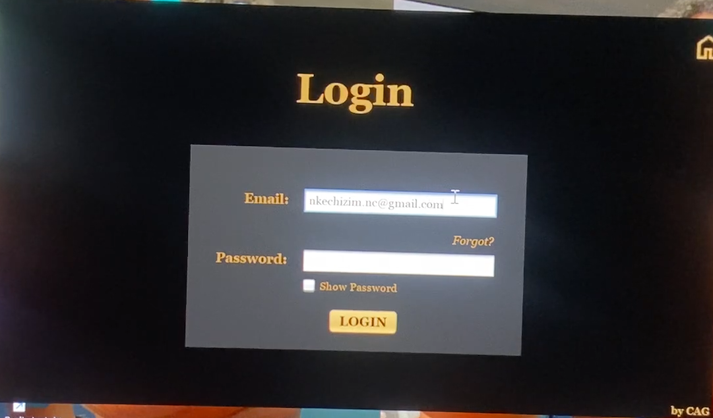
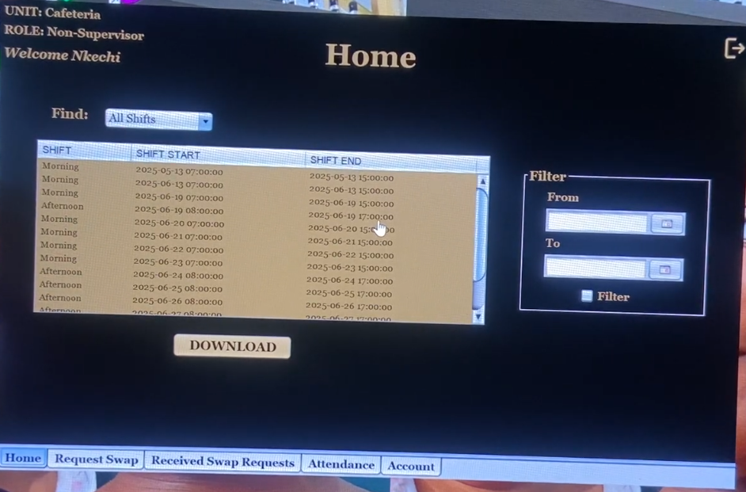
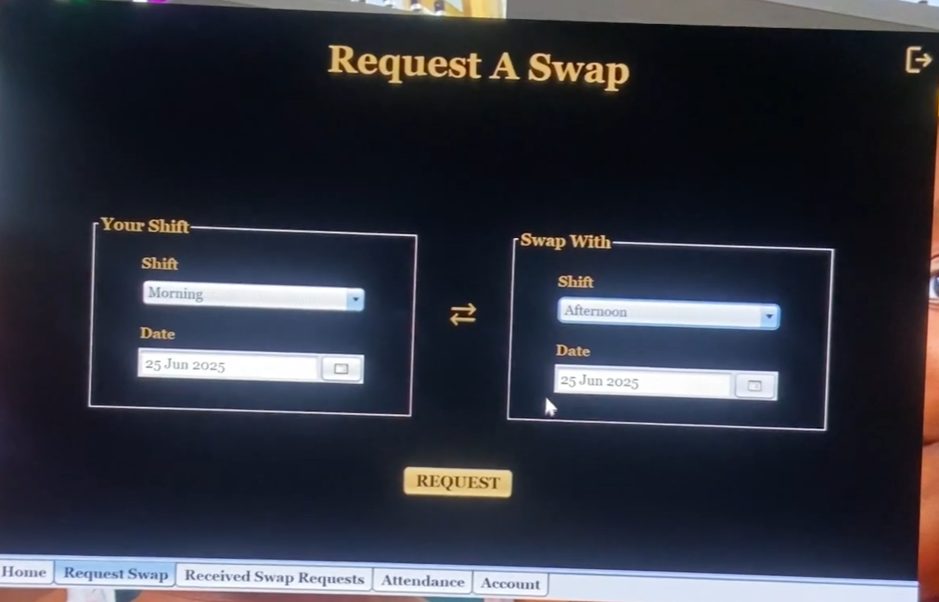
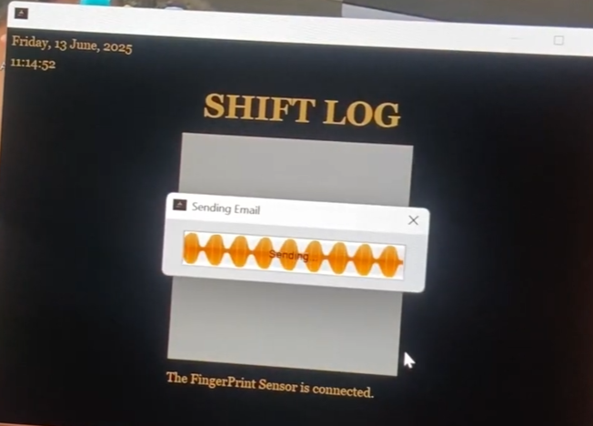

Project Description
ShiftSync CAG is a comprehensive desktop application that streamlines workforce management for organizations of all sizes. It centralizes staff scheduling, attendance tracking, and real-time workforce monitoring in one platform. Employees securely clock in and out using biometric verification, ensuring accurate records and eliminating time-related fraud. All activities are logged to promote transparency, accountability, and reliable record keeping. ShiftSync CAG enhances operational efficiency and gives organizations deeper insight into daily workforce performance.
GitHub RepoKey Technologies
- Frontend (UI): Java Swing
- Backend: Java
- Database: MySQL + JDBC
- Biometrics: DigitalPersona U.are.U 4500 Fingerprint Scanner + DigitalPersona SDK
Key Features
- Biometric Authentication: Employees’ clock-ins and clock-outs are verified using a fingerprint scanner, preventing time fraud and ensuring reliable records.
- Smart Staff Scheduling: Admins can create, update, and assign work shifts with ease. Schedules automatically sync with employee dashboards, reducing confusion and improving workflow clarity.
- Real-Time Attendance Tracking: Instant clock-in and clock-out event logging, allowing managers to monitor attendance patterns, generate reports, and identify discrepancies quickly.
- Secure & Role-Based Access: The system ensures that employees and admins only access features relevant to their roles, so sensitive data remains protected with secure database interactions.